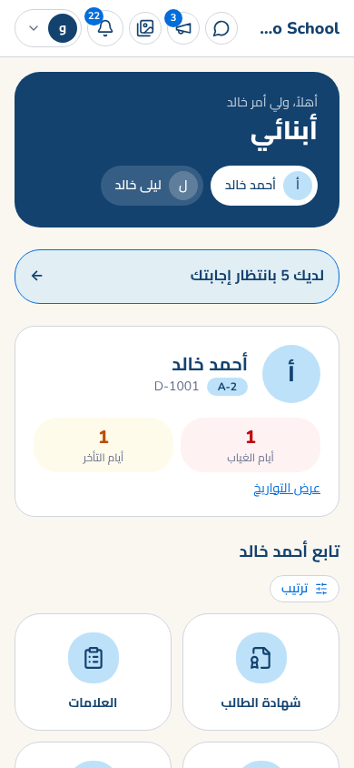
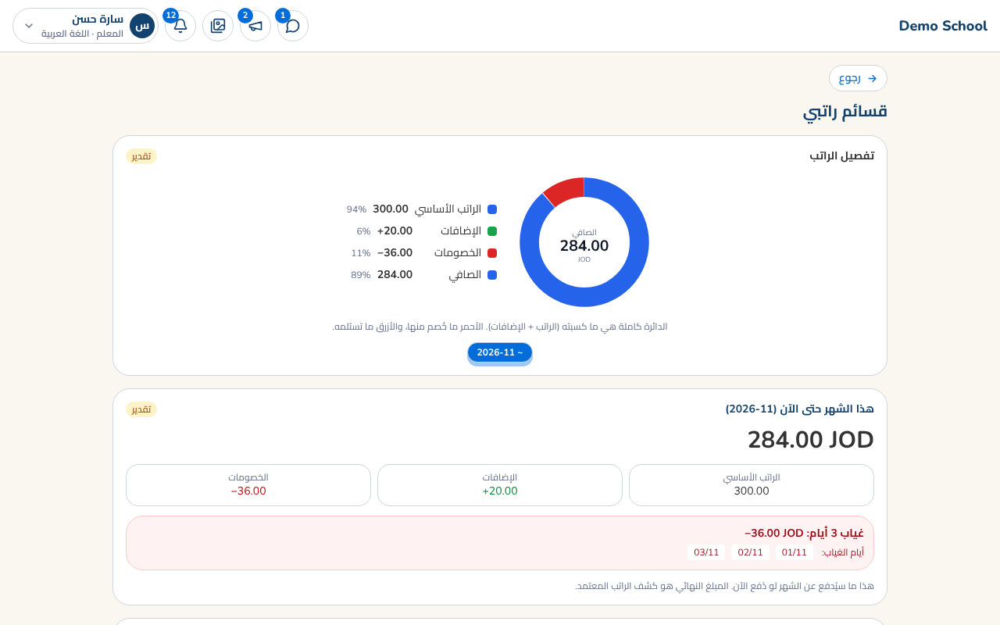
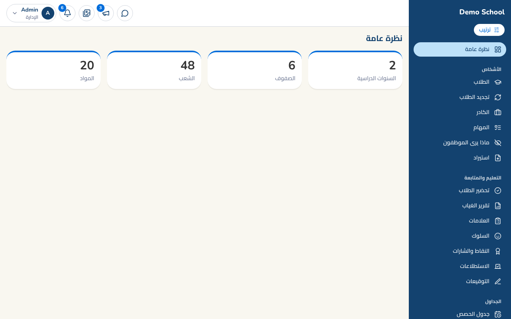

منصة واحدة تجمع المدرسة وأسرها: متابعة، تواصل، رسوم، وكل شيء بالعربية.



تجربة قصيرة على فصل دراسي بوحدات قليلة (الحضور، العلامات، التواصل، الأقساط)، مع تدريب للمعلمين ودعم مباشر، ونتعلم منكم ما يلزم لتحسينه قبل التوسع.
هذه ورقة تعريفية، لا تتضمن أسعاراً أو التزامات. البيانات في العرض بيانات تجريبية. النصوص القانونية (الخصوصية والشروط) قيد المراجعة القانونية وستُعتمد قبل أي استخدام ببيانات حقيقية.